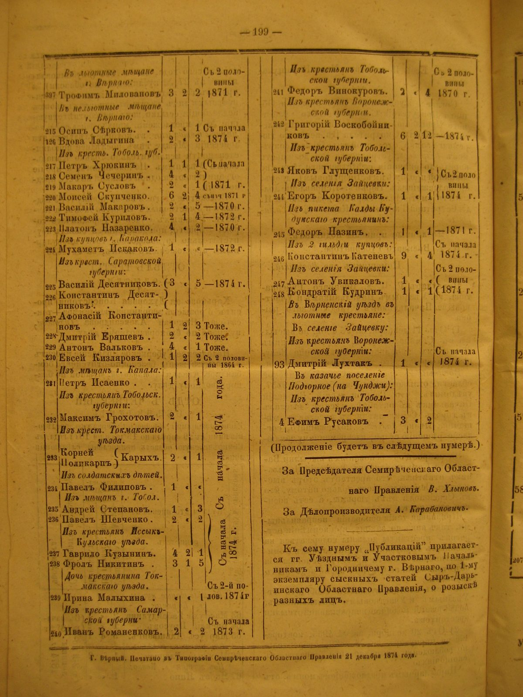

Zeitungsecke · 1874
Ефим Русаков причислен в Подгорное на Чундже
Строка из списка причисленных в Семиреченскую область: крестьянин Тобольской губернии Ефим Русаков зачислен в казачье поселение Подгорное (на Чунджи). Это документальное место исхода рода Русаковых.

«Публикации Семиреченского областного правления», с. 199. Отпечатано в г. Верном 21 декабря 1874 года.
«Въ казачье поселеніе Подгорное (на Чунджи):
Изъ крестьянъ Тобольской губерніи:
4 | Ефимъ Русаковъ . . | 3 | « | 2»Строкой выше, под тем же заголовком раздела: «93 | Дмитрій Лухтакъ . | 1 | « | « | Съ начала 1874 г.» - он причислен в селение Зайцевку. Внизу столбца: «(Продолженіе будетъ въ слѣдущемъ нумерѣ.)»
Заголовок всей таблицы стоит страницей раньше, на с. 198: «Распоряженіями г. Военнаго Губернатора, послѣдовавшими съ 29 апрѣля по 13 декабря 1874 года, въ Семирѣченскую область причислены слѣдующія лица». Графы там же: номер списка; куда и кто именно перечислен; число перечисленных душ, отдельно мужских ревизских и не ревизских и отдельно женских; с какого времени перечисляются. Для Ефима Русакова это читается как 3 мужские ревизские души и 2 женские, в графе «не ревизскихъ» стоит знак повтора. Графа о времени в его строке не заполнена.
Что из этого следует для рода. Русаковы пришли в Семиречье крестьянами Тобольской губернии, а не казаками: в казачье сословие род перевели уже на месте, в 1874 году. Уезд и волость внутри губернии документ не называет, их ещё предстоит установить по посемейным спискам и переселенческим делам 1870-х годов. Само поселение Подгорное на Чундже - это позже выселок Подгорный, затем станица Подгорненская, ныне село Кыргызсай Уйгурского района Алматинской области; не путать с другим Подгорным, бывшей станицей Кегетинской в Чуйской долине. По метрикам Борохудзирского прихода Русаковы записаны в соседнем Чунджинском выселке, так что привязывать род к самому Подгорному по умолчанию нельзя.
На этой же странице перечислены причисленные в другие места, среди них есть фамилии, которые встречаются и в станице: Винокуров, Константинов, Никитин, Кудрин. Это однофамильцы: в списке они идут мещанами города Верного и жителями селения Зайцевки, родство с голубевскими семьями не установлено.

Вся страница 199 целиком, для проверки контекста.
Источник скана: подшивка «Публикации по Семиреченской области. 1874» из собрания Натальи (папка сканов в родовом архиве), лист IMG_1481. Страница найдена сплошным распознаванием тома.
www.starinariy.kz ·
www.starinariy.ru